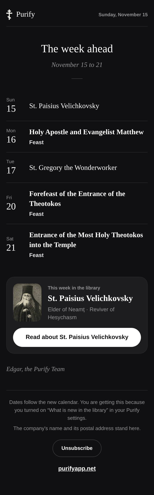
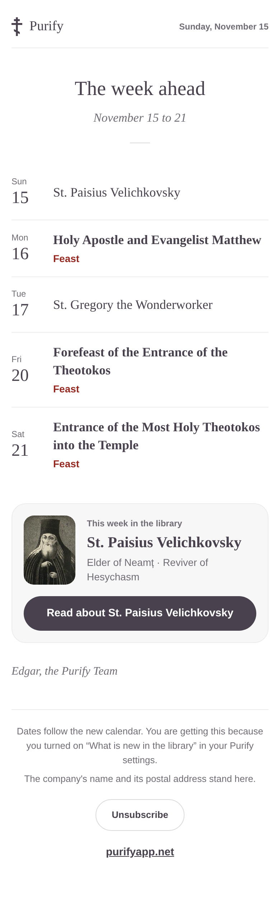
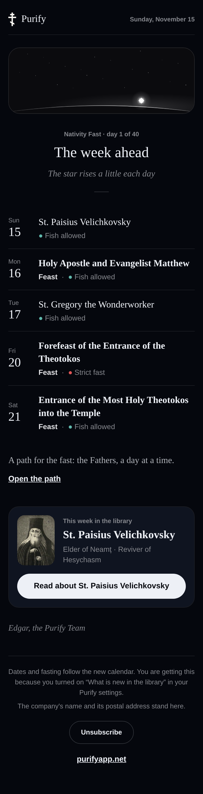
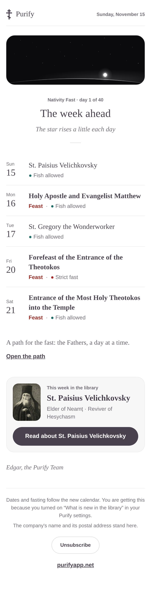
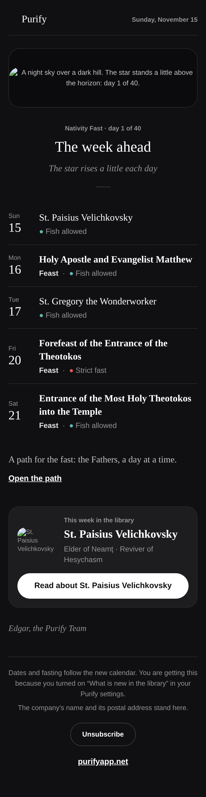
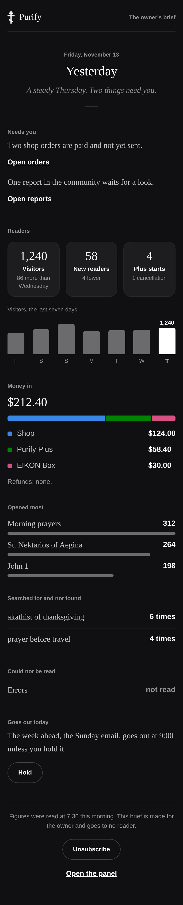
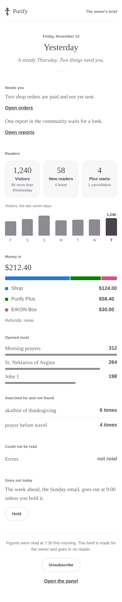

docs/brand/kit/email · 13 November 2026
The Purify email look
One look for every email Purify sends, drawn from the app itself and made for a phone first, with its first season: the Nativity Fast, which begins on 15 November. Dark leads. No parchment.
The reader email
The Sunday email is the sample. The same pieces carry the monthly note and a release letter. It opens the way a chapter opens in the app: a centred title, a line under it, the short rule. The week is set as a leaf of the calendar, the day in the margin and the name beside it. The week's saint stands as Today's card stands, with the app's own button. It is one column at a phone's width, and every button and link is 44 tall.


In the Nativity Fast
From 15 November to 24 December the same email wears the app's Night sky, and opens on the night of the app's own Nativity card. The star stands a little higher each day of the fast, so each of the six Sunday emails shows it higher than the last. Each day says its fast in the calendar's own words, and one line opens the path for the fast. The night stays a night on a light screen, as the card does in the app.



The owner's brief
The same look, for the one reader it is made for. What needs him comes first. Three figures, then three small charts drawn in the email itself with table cells: seven days of visitors, money in by source in the money chart's own colours, and what was opened most. A mail client runs no script, so every number a chart needs is also said in words. A figure that could not be read says so. Every figure shown here is a sample, made up for the drawing.


Why it looks this way
Each choice, its reason, and what it does for the reader. Yes or no is yours.
No card on a canvas: the page is the letter
A white or grey card centred on a canvas is every product's email. The app's reading page has no card either.
For the readerIt reads as a page of Purify, not as a notice from a service.
It opens like a chapter: title, a line in italics, the short rule
The app's own opening. One look for every letter Purify sends.
For the readerThe reader knows what this is and for when before reading a row.
The week as a leaf of the calendar, the day in the margin
The Sunday email is a calendar, and a reader scans it for one day. Service books set the day in the margin.
For the readerA day is found by its number in one pass of the eye.
A feast said in words, set heavier, red only on a light page
The rubric is the Church's own way to mark a feast, and the app keeps it white in the dark. Never by colour alone.
For the readerFeasts stand out at a glance and still read for anyone who sees no colour.
The week's saint on the app's card, with the one button
It is Today's card. One button is one invitation.
For the readerThe one thing to do next is plain, and 48px tall under a thumb.
In the fast: the night of the Nativity card, the star higher each Sunday
The owner chose that card for the fast in the app. Carrying it into the email makes the season one thing across both.
For the readerSix Sundays show the fast moving toward the feast without a word of urging.
In the fast: each day says its fast
"What may I eat this week" is the question a fast raises, and the calendar already answers it.
For the readerThe email is useful on Wednesday, not only on Sunday.
The brief: what needs him first, then three figures, then three small charts
A brief is read in a minute on a phone. What needs a decision comes before what is only interesting.
For the readerHe can stop reading after the first screen and have missed nothing urgent.
Charts drawn with table cells, every number also in words
A mail client runs no script and Gmail shows no SVG.
For the readerThe charts appear in every client, and nothing depends on them.
Dark written inline, a clean white where the screen is light
Dark leads and is what Purify sends today; a client that darkens by force cannot spoil it. No parchment.
For the readerIt looks like the app, in every client.
Georgia and Arial where Lora and DM Sans are not on the device
No font is fetched, by the house's rule, so the look must stand on what every device has.
For the readerIt opens fast and never flashes from one face to another.
What is the app's own
| In the email | Where the app has it |
|---|---|
| Every colour | The design kit's tokens (docs/brand/kit/tokens.css), and the app's stylesheet for what the kit does not carry. Read when the emails are built. None is typed in. |
| Dark, and the light | Dark is the app's default and leads. On a light screen the email is a clean white in the app's own ink for a white page. Never parchment. |
| The cross and the wordmark | public/purify-cross-mark.png, and the same mark in the light page's ink. |
| The opening: title, line, short rule | A chapter's head in the reader (the page-open pieces). |
| The saint's card and its button | Today's card, and the saint's own picture from the library. |
| The night and its star | The Nativity card on Today, by its own numbers (lib/reading/nativityStar.ts). |
| A feast's mark and each fast's colour | The calendar's rubric and its fasting registers. |
| The brief's three money colours | The admin panel's money chart. |
| The faces | Lora and DM Sans where a reader has them, Georgia and Arial everywhere else. Named, never fetched. |
The check
Run with node docs/brand/kit/email/check.mjs on 13 November 2026. All of it passed.
| What was held | Result |
|---|---|
| checkMock, all fifteen rules, on each of the three emails at 360, 390, 412 and 1032 wide, on Dark, Black, Candlelight, Monastery and the email's clean light, and in Arabic's direction. The season's email on Night sky as well. | Passed, twelve runs of twelve. |
| At each width nothing runs past the screen's edge and no word is cut by its box. | Passed. |
| The file a mail client gets wears the same colours as the checked drawing, piece by piece, on a dark screen and on a light one. | Passed: 115, 135 and 250 pieces. |
| No script, no handler, no stylesheet or font fetched. Every picture has its words. | Passed. |
| No parchment: no email and no page here holds the app's Light paper. | Passed. |
| Each email under 100KB of HTML, so Gmail never clips it, and each picture under 100KB. | Passed: 14, 17 and 27KB. |
| No picture on the heritage list. | Passed: none of four. |
Named allowances: the night is a dark island on every palette, as the card is in the app, and two of the money chart's colours are one on both of the panel's themes.
Not done here, and still to do before any send: a look in real Gmail, Apple Mail and Outlook, light and dark. These pictures are drawn by a browser, which honours more than Outlook does. In Outlook on Windows the corners will be square and the faces Georgia and Arial; nothing depends on either.
For the build
- The pictures need a home on the main web before a send (the night, the mark in ink). In these files they sit in img/ beside the email.
- The night is one picture for each day of the fast. The build script draws any day; only day 1 is drawn so far.
- Each day's fast comes from the calendar the app already has. The Sunday email does not carry it yet.
- The Sunday email now names 20 and 21 November by the saint alone, so both read “The Most Holy Theotokos”. The sample uses the commemoration's own name. The arbiter has this as a finding.
- Dark is the scheme written inline, and the email turns light only where a client says the screen is light. The kit's first email template, which was light first, gave way to these files, so the kit holds one email look.